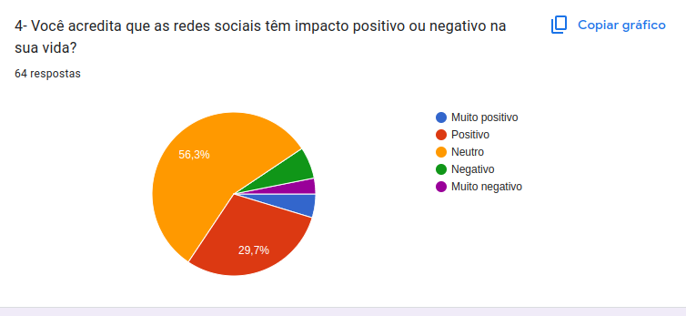

1. Quantas horas você passa por dia em redes sociais?
2. Qual sua rede social favorita?
3. Qual seu objetivo ao acessar redes sociais?
4. Você acredita que as redes sociais têm impacto positivo ou negativo na sua vida?
5. Você já se sentiu distraído ou prejudicado por usar redes sociais?